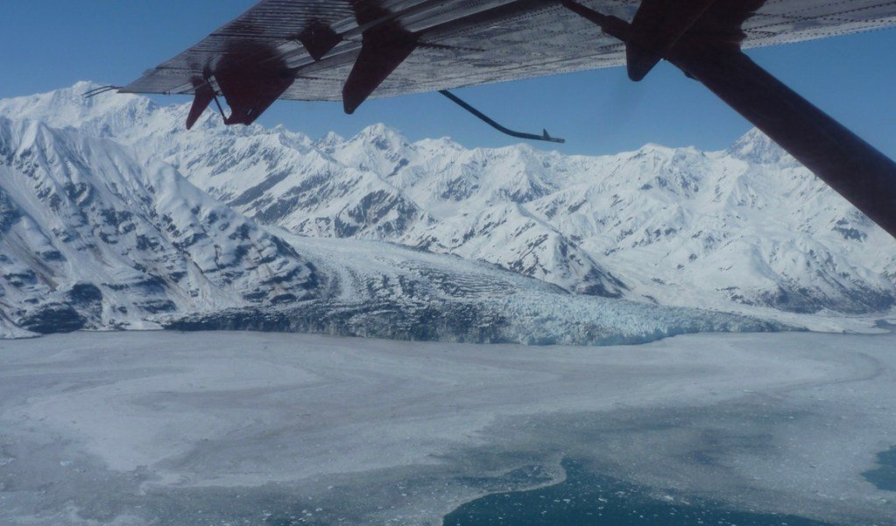

Prof. Tim Bartholomaus and partners have received a $1.2M grant from the U.S. National Science Foundation to understand the connections between glacier sliding and the water and sediment underneath glaciers and ice sheets. This relationship between glacier flow, water, and sediment is poorly known and glaciologists are not yet confident whether increasing melt of the Greenland Ice Sheet and global glaciers is likely to speed up ice flow, and therefore further increase sea level, or slow down ice flow and potentially diminish the rate at which sea levels will rise.

To address this question, Dr. Bartholomaus, his graduate students, and collaborators from Boise State University, will be traveling to a remote, mountainous region of Alaska over four years, to study a peculiar glacier that undergoes ten-fold increases in flow speed, every 6 or so years. These unusual “glacier surges” are known to depend on subglacial water and mud at the bottom of glaciers, but hypotheses regarding their development have not been tested. By deploying seismometers, GPS receivers, radar, and other equipment, to the glacier surface, and then using computer simulations to analyze the results, Dr. Bartholomaus and his teammates will produce better understanding of the physics of glacier flow, and ultimately enable better predictions of coming sea level rise.
This project begins this month, August 2020, when the team flies to Yakutat, Alaska, and then via helicopter out to Turner Glacier, in the Saint Elias Mountains.
The UI Glacier Dynamics lab will be recruiting a new Ph.D. student to begin work on this project, starting in the fall of 2021.